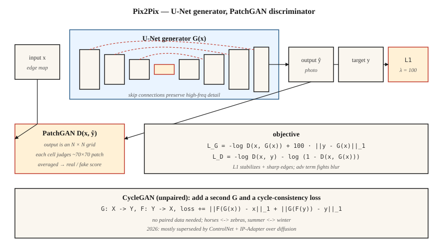

Conditional GANs & Pix2Pix
The first big unlock of 2014-2017 was controlling what a GAN makes. Attach a label, or an image, or a sentence. Pix2Pix did the image version and it still beats every generic text-to-image model on narrow image-to-image tasks.
- Type
- Build
- Languages
- Python
- Prerequisites
- Phase 8 · 03 (GANs), Phase 4 · 06 (U-Net), Phase 3 · 07 (CNNs)
- Time
- ~75 minutes
#The Problem
An unconditional GAN samples arbitrary faces. Useful for a demo, useless in production. You want: map a sketch to a photo, map a map to an aerial photo, map a daytime scene to nighttime, colorize a grayscale image. In all of these, you are given an input image x and must output y with some semantic correspondence. There are many plausible ys per x. Mean-squared error flattens them into mush. An adversarial loss doesn't, because "looks real" is sharp.
Conditional GAN (Mirza & Osindero, 2014) adds a condition c as an input to both G and D. Pix2Pix (Isola et al., 2017) specialized this: condition is a full input image, generator is a U-Net, discriminator is a patch-based classifier (PatchGAN), and loss is adversarial + L1. That recipe outperforms from-scratch text-to-image models on narrow image-to-image domains even in 2026 because it is trained on paired data — you have exactly the signal you need.
#The Concept

Conditional G. G(x, z) → y. In Pix2Pix, z is dropout inside G (no input noise — Isola found explicit noise got ignored).
Conditional D. D(x, y) → [0, 1]. Input is the pair (condition, output). This is the key difference: D must judge whether y is consistent with x, not just whether y looks real.
U-Net generator. Encoder-decoder with skip connections across the bottleneck. Critical for tasks where input and output share low-level structure (edges, silhouette). Without the skips, high-frequency detail vanishes.
PatchGAN discriminator. Instead of outputting a single real/fake score, D outputs an N×N grid where each cell judges a receptive field of ~70×70 pixels. Averaged. This is a Markov random field assumption: realism is local. Much faster to train, fewer parameters, sharper output.
Loss.
loss_G = -log D(x, G(x)) + λ · ||y - G(x)||_1
loss_D = -log D(x, y) - log (1 - D(x, G(x)))The L1 term stabilizes training and pushes G toward the known target. L1 gives sharper edges than L2 (medians, not means). λ = 100 was the Pix2Pix default.
#CycleGAN — when you don't have pairs
Pix2Pix needs paired (x, y) data. CycleGAN (Zhu et al., 2017) drops this requirement at the cost of an extra loss: the cycle consistency loss. Two generators G: X → Y and F: Y → X. Train them so F(G(x)) ≈ x and G(F(y)) ≈ y. This lets you translate horses to zebras, summer to winter, without paired examples.
In 2026, unpaired image-to-image is mostly done via diffusion (ControlNet, IP-Adapter) rather than CycleGAN, but the cycle-consistency idea survives in almost every unpaired domain adaptation paper.
#Build It
code/main.py implements a tiny conditional GAN on 1-D data. The condition c is a class label (0 or 1). The task: produce a sample from the conditional distribution for the given class.
#Step 1: append condition to both G and D inputs
def G(z, c, params):
return mlp(concat([z, one_hot(c)]), params)
def D(x, c, params):
return mlp(concat([x, one_hot(c)]), params)One-hot encoding is the simplest way. Larger models use learned embeddings, FiLM modulation, or cross-attention.
#Step 2: train conditional
for step in range(steps):
x, c = sample_real_conditional()
noise = sample_noise()
update_D(x_real=x, x_fake=G(noise, c), c=c)
update_G(noise, c)The generator must match the real distribution for the given condition, not the marginal.
#Step 3: verify per-class output
for c in [0, 1]:
samples = [G(noise, c) for noise in batch]
mean_c = mean(samples)
assert_near(mean_c, real_mean_for_class_c)#Pitfalls
- Condition ignored. G learns to marginalize, D never penalizes because condition signal is weak. Fix: condition D more aggressively (early layer, not just late), use projection discriminator (Miyato & Koyama 2018).
- L1 weight too low. G drifts to arbitrary real-looking outputs, not faithful ones. Start λ≈100 for Pix2Pix-style tasks.
- L1 weight too high. G produces blurry outputs because L1 is still an L_p norm. Anneal down once training stabilizes.
- Ground-truth leakage in D. Concatenate
(x, y)as D input, not justy. Without this D cannot check consistency. - Mode collapse per class. Each class can collapse independently. Run class-conditional diversity checks.
#Use It
2026 state of image-to-image tasks:
| Task | Best approach |
|---|---|
| Sketch → photo, same domain, paired data | Pix2Pix / Pix2PixHD (still fast, still sharp) |
| Sketch → photo, unpaired | ControlNet with a Scribble conditioning model |
| Semantic seg → photo | SPADE / GauGAN2 or SD + ControlNet-Seg |
| Style transfer | Diffusion with IP-Adapter or LoRA; GAN methods are legacy |
| Depth → photo | ControlNet-Depth over Stable Diffusion |
| Super-resolution | Real-ESRGAN (GAN), ESRGAN-Plus, or SD-Upscale (diffusion) |
| Colorization | ColTran, diffusion-based colorizers, or Pix2Pix-color |
| Daytime → nighttime, seasons, weather | CycleGAN or ControlNet-based |
Pix2Pix remains the right tool when (a) you have thousands of paired examples, (b) the task is narrow and repeatable, and (c) you need fast inference. On generic open-domain tasks, diffusion wins.
#Ship It
Save outputs/skill-img2img-chooser.md. Skill takes a task description, data availability (paired vs unpaired, N samples), and latency/quality budget, then outputs: approach (Pix2Pix, CycleGAN, ControlNet variant, SDXL + IP-Adapter), training data requirements, inference cost, and eval protocol (LPIPS, FID, task-specific).
#Exercises
- Easy. Modify
code/main.pyto add a third class. Confirm G still maps each class's noise to the correct mode. - Medium. Replace L1 with a perceptual-style loss in the 1-D setting (e.g. a small frozen D acting as feature extractor). Does it change sharpness of the conditional distribution?
- Hard. Sketch a CycleGAN in the 1-D setting: two distributions, two generators, cycle loss. Show that it learns to map between them with no paired data.
#Key Terms
| Term | What people say | What it actually means |
|---|---|---|
| Conditional GAN | "GAN with labels" | G(z, c), D(x, c). Both networks see the condition. |
| Pix2Pix | "Image-to-image GAN" | Paired cGAN with U-Net G and PatchGAN D + L1 loss. |
| U-Net | "Encoder-decoder with skips" | Symmetric conv network; skips preserve high-freq. |
| PatchGAN | "Local-realism classifier" | D outputs per-patch score instead of global score. |
| CycleGAN | "Unpaired image translation" | Two G's + cycle-consistency loss; no paired data. |
| SPADE | "GauGAN" | Normalizes intermediate activations with the semantic map; segmentation-to-image. |
| FiLM | "Feature-wise linear modulation" | Per-feature affine transform from the condition; cheap conditioning. |
#Production note: Pix2Pix as a latency-bound baseline
When you have paired data and a narrow task (sketch → render, semantic map → photo, day → night), Pix2Pix's one-shot inference beats diffusion by an order of magnitude on latency. The production comparison is usually:
| Path | Steps | Typical latency at 512² on a single L4 |
|---|---|---|
| Pix2Pix (U-Net forward) | 1 | ~30 ms |
| SD-Inpaint or SD-Img2Img | 20 | ~1.2 s |
| SDXL-Turbo Img2Img | 1-4 | ~0.15-0.35 s |
| ControlNet + SDXL base | 20-30 | ~3-5 s |
Pix2Pix wins on throughput in static batches (every request is the same FLOPs). Diffusion wins on quality and generalization. The modern play is often to ship a Pix2Pix-style distilled model for the narrow task and a diffusion fallback for tail inputs.
#Further Reading
- Mirza & Osindero (2014). Conditional Generative Adversarial Nets — the cGAN paper.
- Isola et al. (2017). Image-to-Image Translation with Conditional Adversarial Networks — Pix2Pix.
- Zhu et al. (2017). Unpaired Image-to-Image Translation using Cycle-Consistent Adversarial Networks — CycleGAN.
- Wang et al. (2018). High-Resolution Image Synthesis with Conditional GANs — Pix2PixHD.
- Park et al. (2019). Semantic Image Synthesis with Spatially-Adaptive Normalization — SPADE / GauGAN.
- Miyato & Koyama (2018). cGANs with Projection Discriminator — the projection D.